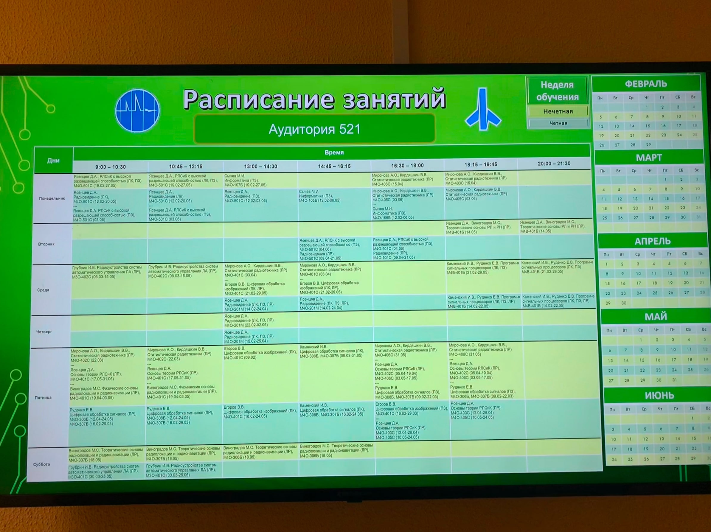
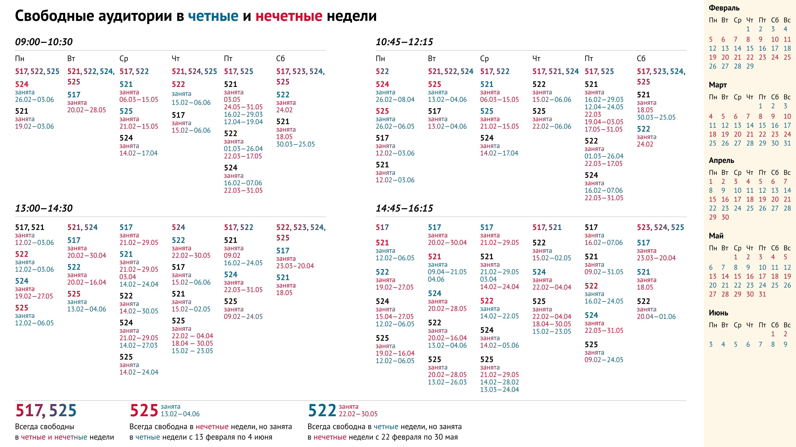
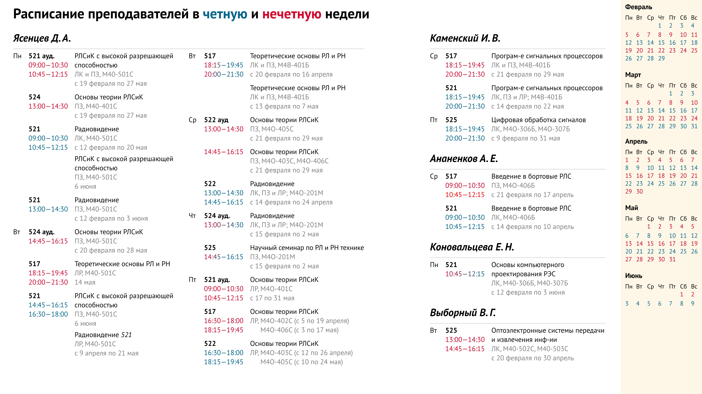
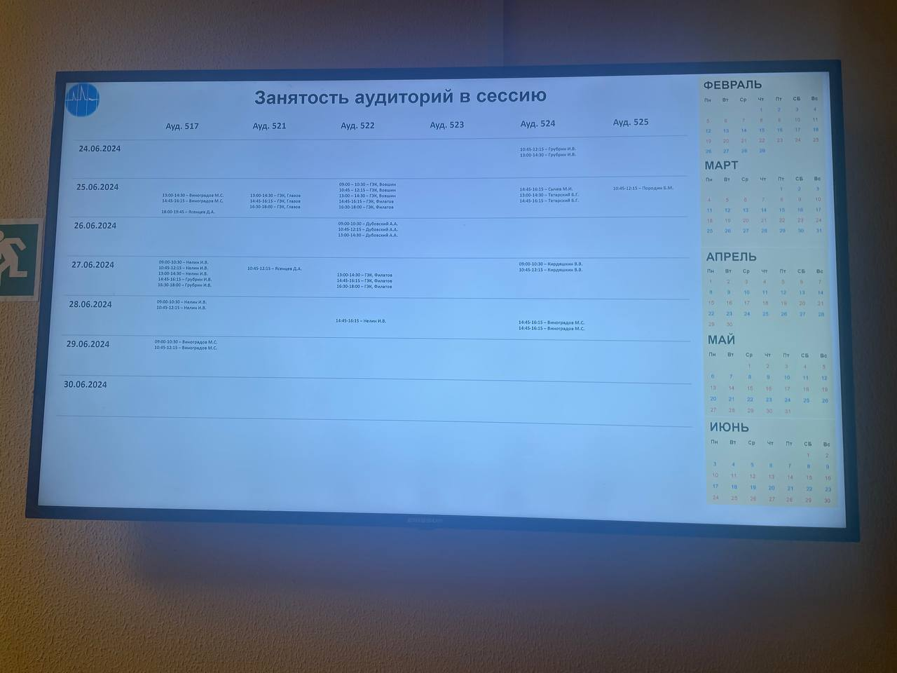

Переверстка таблицы с расписание свободных аудиторий
 Подробный разбор на ютубе
Подробный разбор на ютубе
Изначальная таблица и ее проблемы
На шесть экранов выводится ненужная информация. Расписание занятий преподаватели и студенты уже знают, когда приходят на кафедру. А если не знают, то смотрят у себя в телефоне.
Студентам полезно узнать расписание преподавателей, которое в приложении стоит неправильно. Но если попытаться считать расписание конкретного преподавателя, то придется посмотреть все ячейки на шести экранах, а потом их запомнить.
Преподавателям часто нужна свободная аудитория для проведения дополнительных занятий или совещаний. Задача уже проще — посмотреть по паре ячеек на шести экранах. Но это все еще долго и неудобно.
В результате и студенты, и преподаватели идут к начальнику кафедры и спрашивают нужную информацию у него. Таблица висит по приколу.
Моя таблица и решение проблем
Я разделил таблицу на часть для студентов и преподавателей. Получилось на один экран больше, чем изначально. Но зато информация стала читаться. Теперь вся информация об аудиториях находится на двух экранах, а не на шести. Расписание преподавателей собрано в кучку.
Таблица запускается с компьютера без интернета через «Павр поинт». С программированием никто возиться не хочет, поэтому на экране должна быть вся информация.
А информации довольно много. Все завязано на четности и нечетности недели. Аудитория может быть занята с апреля по май, но только по нечетным неделям, а по четным свободна. «Интервал занятости» может прерываться, как у 525 аудитории в четверг с 13:00 по 14:30.
Аудитория всегда выбирается с учетом времени. Если тебе нужна аудитория, то ты смотришь сначала на часы, а уже потом на таблицу.
Поэтому в подзаголовке находится время, а сразу под ним все свободные аудитории на это время и на любой день недели.
Благодаря таблице не придется тратить полторы минуты на поиск аудитории или идти к начальнику кафедры.
Студент хочет узнать расписание преподавателя, чтобы понять, когда он находится в вузе.
Теперь вся информация собрана в одном месте. Можно сфотографировать расписание нужного преподавателя и смотреть его с телефона. Такой сценарий будет полезен, если преподавателю надо сдавать в течение семестра лабораторные работы вне расписания.
Начальник кафдеры сделал самодел под сессию. Фотки лучше нет.
